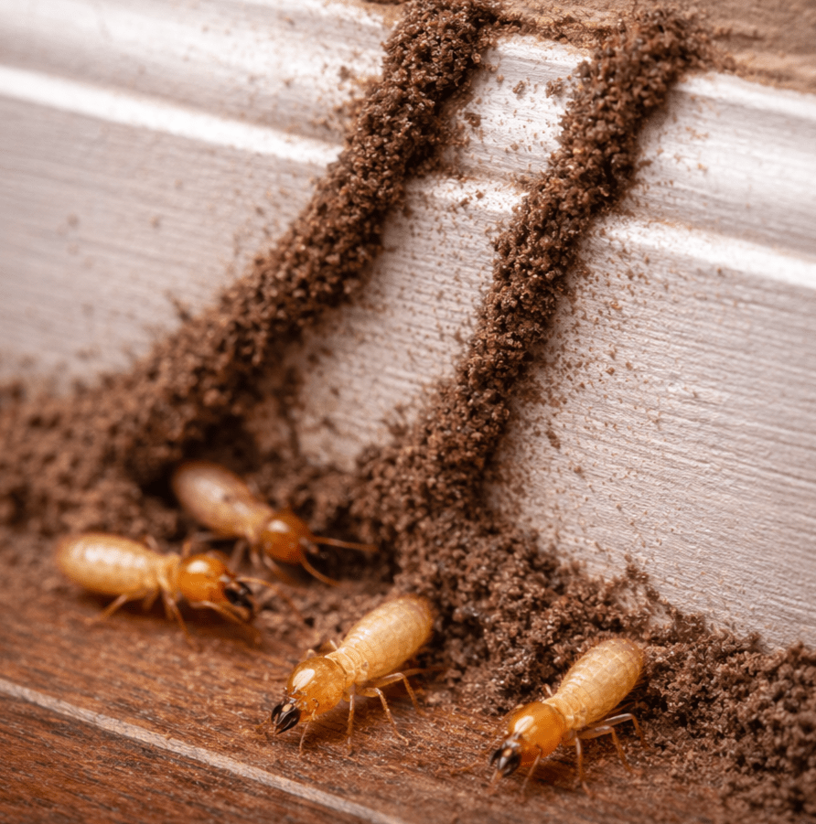

Comején Subterráneo

El comején subterráneo vive principalmente en el suelo y se mueve
hacia estructuras buscando madera, humedad y refugio. Es una de las plagas más
importantes para estructuras porque puede causar daños severos sin que se noten
al inicio.
¿Cómo entra a la casa?
- Construye túneles de lodo (tubos) desde el suelo hacia la madera.
- Puede acceder por grietas en losas, juntas, tuberías y puntos con humedad.
- En ocasiones, los alados entran por puertas/ventanas y forman nuevas colonias.
Señales comunes
- Túneles de lodo en paredes, cimientos, columnas o cerca de marcos.
- Madera hueca o que suena “vacía” al tocar.
- Pintura abombada o áreas con apariencia de humedad.
- Presencia de alados o alas desprendidas cerca de luces/ventanas.
Daños y riesgos
- Puede debilitar marcos, puertas, estructuras de techo o elementos decorativos de madera.
- El daño ocurre “por dentro”, por eso una inspección temprana es clave.
- La humedad y filtraciones aumentan la probabilidad de infestación.
Prevención (recomendado)
- Corregir filtraciones y acumulación de humedad.
- Mantener el perímetro limpio: evitar madera, cartón o escombros pegados a la casa.
- Sellar grietas visibles y revisar puntos de entrada (tuberías, uniones, losas).
- Inspección preventiva periódica, especialmente si ya hubo actividad.
Tratamiento profesional
El control efectivo del comején subterráneo requiere un plan técnico para
atacar la colonia y reducir el riesgo de reinfestación. En Bugs Or Us PR
trabajamos con diagnóstico claro, tratamientos efectivos y prevención estratégica,
priorizando siempre la seguridad de su familia, sus mascotas y el medio ambiente.
Solicitar Servicio Profesional
← Volver al Inicio